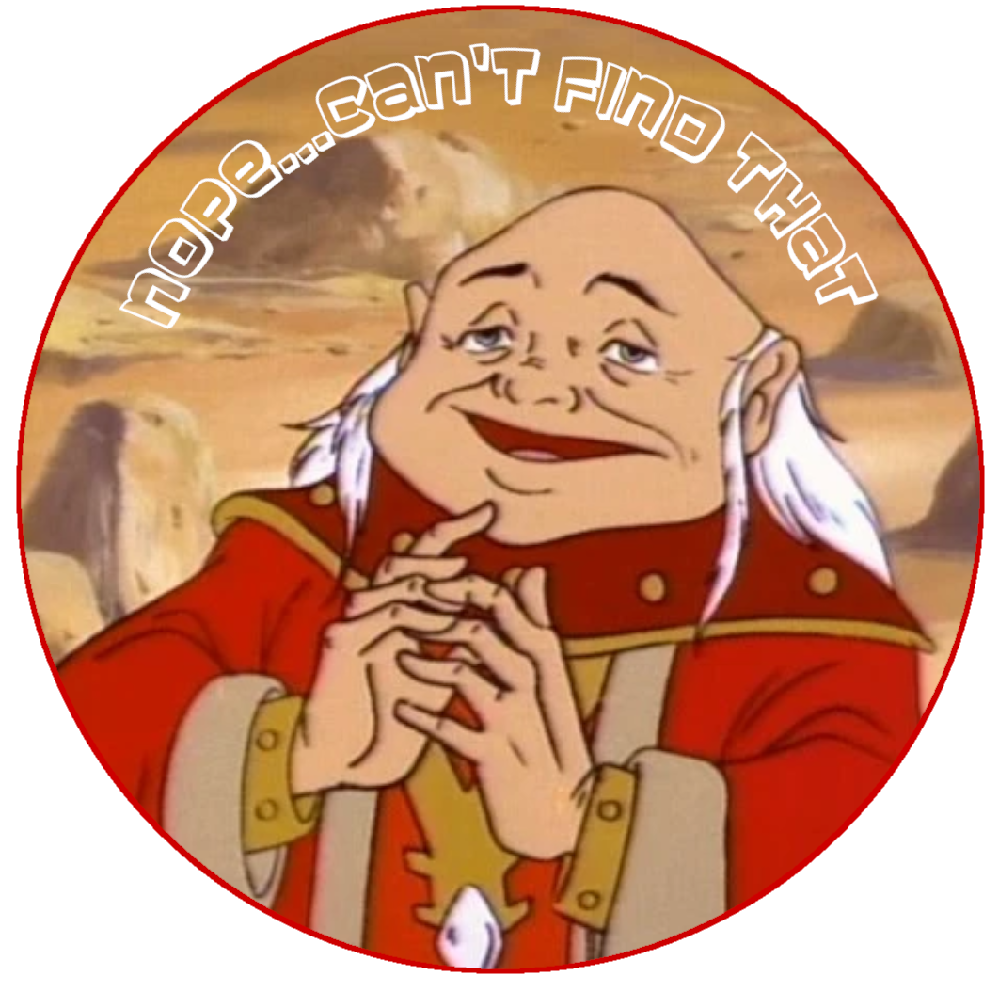

{% extends "encyclopedia/layout.html" %}

{% block title %}
    Wiki Page: Dont Know Anything About That - Sorry!
{% endblock %}

{% block body %}

    <!-- 
        open the corrosponding wiki file
        convert markdown to html
        render the html wiki_page
    -->
    <div class='page_not_found_main'>
        <div class = 'page_not_found'>
            
        </div>
        <div class="not_found_explanation">
            <h3>I'm so sorry, but I cant seem to find {{page_request}}</h3>
            <br>Perhaps it is yet to be written? hmmm??
        <div>
    </div>


{% endblock %}